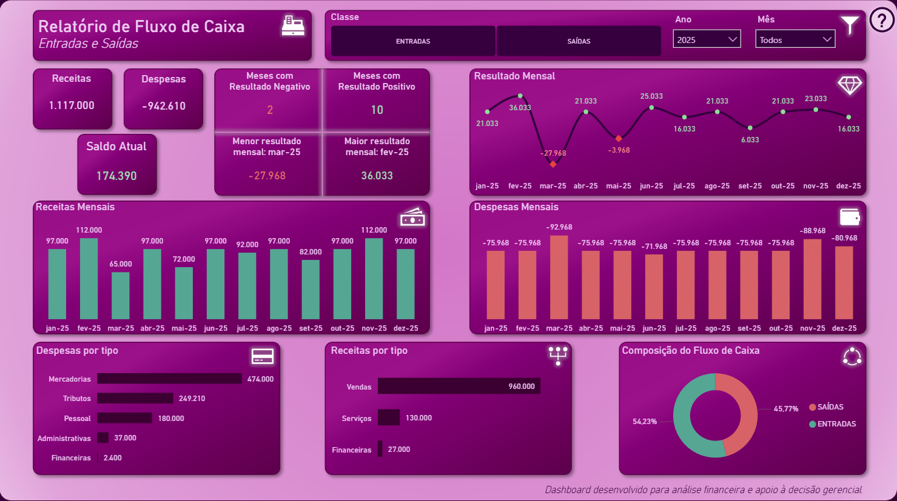
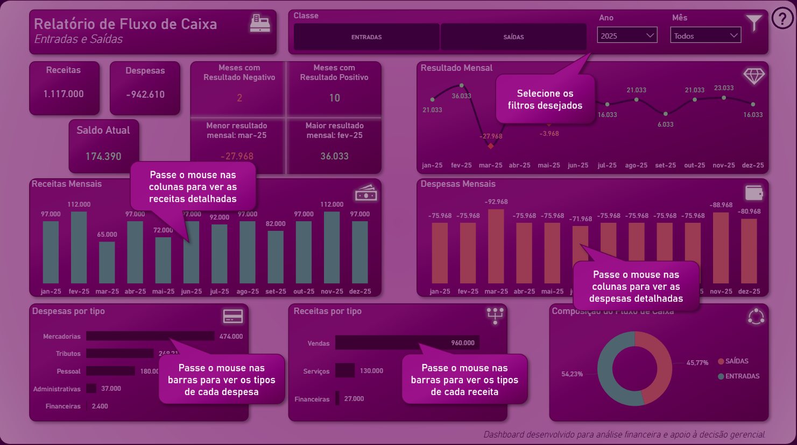

Dashboard de Fluxo de Caixa
Análise de entradas e saídas de caixa com indicadores de resultado mensal, composição de receitas e despesas e apoio à decisão gerencial.
- Power BI (DAX, modelagem e visual)
- Excel como base de dados
- Foco em análise financeira

Visão Analítica e Interativa
Painel com foco em storytelling financeiro, uso de tooltips, leitura guiada e filtros para exploração dos dados.